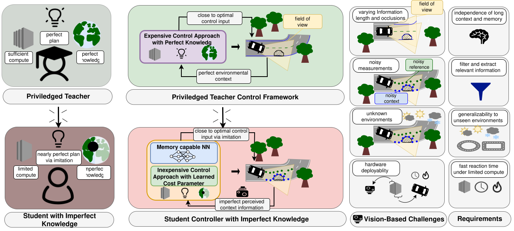

Controlling an agent in an environment solely perceived through onboard vision is challenging: perception yields noisy, variable-length, and partially occluded context, while onboard compute is shared between perception and control, limiting the planning horizon executable in real time. We propose VIGOR-MPC, a modular student–teacher framework, agnostic to the perception pipeline, which addresses reference tracking accross navigation tasks by distilling a privileged, field-of-view-aware long-horizon MPC into a computationally lightweight short-horizon MPC whose cost parameters are determined online from vision. The teacher operates in simulation with full state knowledge and a multi-trajectory formulation that guarantees the agent can stay within its field of view. The student observes only the noisy, occluded context produced by a perception module and learns, via a multi-level recurrent mapping, to infer cost parameters that aim to recover the teacher's behavior despite missing information. We evaluate VIGOR-MPC on vision-based autonomous racing in simulation and on hardware. Using only onboard perception of the track, VIGOR-MPC generalizes to tracks unseen during training and approaches the lap times of the privileged long-horizon teacher while reducing per-step computation by over 90%.

Overview of the VIGOR-MPC framework. The student employs a predefined, parameterized MPC structure whose cost parameters are generated by a memory-capable neural network from noisy and partial environmental observations. The mapping is trained via imitation learning using a privileged teacher with full environmental knowledge. The vision-based challenges addressed by the framework, together with the resulting control requirements, are illustrated on the right.
TBD